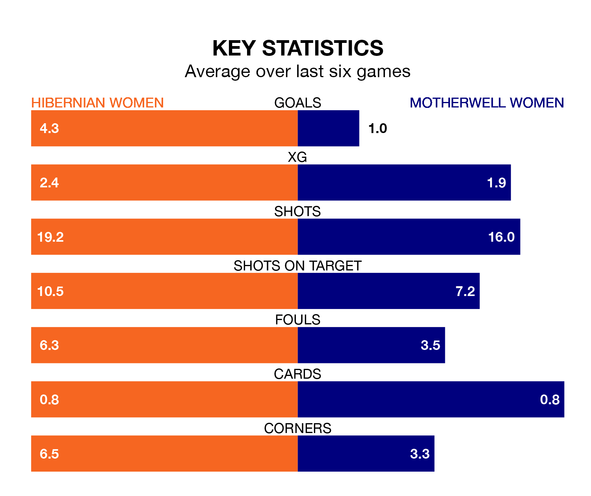

Hibernian Women and Motherwell Women come into Sunday lunchtime's kick-off at the Meadowbank Stadium in contrasting spells, with the home team hitting a rich vein of form while the visitors struggle.
Hibs have won five and lost one of the last six, while Motherwell have taken one win and one draw.
With 25 goals in 17 games so far this season, Motherwell are scoring at below the league average rate with 1.5 goals per game. And they are conceding more than average, letting in 43 goals at a rate of 2.5 per game.
Hibernian, meanwhile, are above average scorers, with 2.9 goals per game, compared to a league average of 2.2. They have conceded 1.5 goals per game.
In the last 10 years, Hibernian and Motherwell have played each other on nine occasions. Hibernian won eight of them and Motherwell one.
On average, Hibs scored 3.0 goals and Motherwell 0.7 in those matches.
Their last meeting was on September 17, when Hibernian won 1-0 away.
In Jorian Baucom, Hibs have one of the league's sharpest shooters so far this season. She has notched 16 goals in 17 appearances, to sit third in the scoring charts.
Her goal rate of one every 75 minutes is quicker than that of Carla Boyce, the away side's top scorer with a goal every 144 minutes, and a total of seven goals in 17 games.
The hosts are fourth in the table after 17 games, of which they have won 10 and drawn two, earning 32 points.
Motherwell are four places behind Hibernian in eighth, with five wins and one draw putting them on 16 points.
Hibernian's last match was on January 14, a 4-0 win against Hamilton Academical, with Baucom (two), Ellis Notely and Michaela McAlonie getting the goals for Hibs.
Motherwell lost 3-0 against Hearts Women last time out, also on January 14.
Updated: 10:02 (UTC), 19/01/24